I see you've taken interest in building a discord bot in Python, or perhaps you’re an expert getting yourself back into building bot. Well, no matter your level, you're in the right place! In this article, I'll walk you through the following:
It may sound like a lot to cover, but once you've read about them all, and gone to practise these points, it'll become second nature to you. All the source code for this tutorial can be found here.
Let's get started!

Okay, let me start by talking about the discord developer portal, which sounds quite self explanatory. It's where developers go to create their own, well, applications. Its main purpose is for Discord bots, but there’s other features you can use too.
For example, on the side bar, there’s an option called “Server Insights”. This allows you to choose a server you own, or are an admin for, and can see information about the server in general, as well as growth, engagement from users and the members within the community. To access the page shown on the image above, you'll need to sign into your account.
On the top right of the screen, next to your Discord profile picture, you can see a button labelled "New Application". Let’s go ahead and click it.

We’re greeted with a small window asking for the name. You can call it anything you want, for this, I’ll just call mine “My Python Bot”.
I know, very creative.
We agree with the terms of service, and create our bot.
Jeez! That’s a lot of options! And the interface looks super organised too. I love it.
Okay, we created our bot!
Keep in mind that the name stated here is not the same as the bot’s name, and you can change the bot’s name and description in the “Bot” option on the side bar.
Let’s move on, shall we?
Let’s move on to discussing bot tokens. In short, they’re basically super long strings that are uniquely assigned to your Discord bot when it’s created. Think of it as your bot’s ID. These will be used to connect our bot to another website, which we’ll use to program our bot later on.
It’s important to note that you do not share your unique bot token with anyone, as anyone with the token can completely take over your bot, so it’s best to keep it to yourself. Which is what I’m going to do. I don’t want you all stealing my tutorial bot please. Thank you.
In the image above, you may notice the “Reset Token” button right next to the profile picture. If you go ahead and click to reset your bot’s token, it will first give you a popup message, basically confirming your choice, and then this screen comes up. Your bot’s token will be where the yellow line is, and they’ll be a copy button to retrieve it.
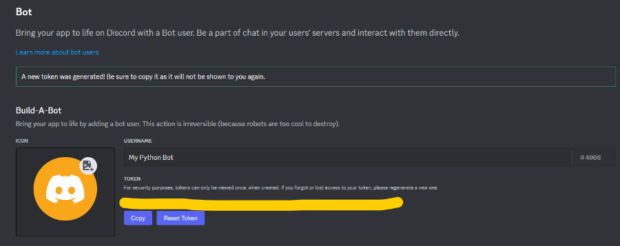Also, the profile picture will be a completely random colour, but it seems I was lucky this time and got my favourite colour: yellow! Awesome! I mean, I need to stay professional.
Of course, you can change your bot’s profile picture anytime.
We can now move on to talking about the website: Replit!
Click here to be taken to Replit.
In the above image is Replit’s homepage. It’s used for basically anything coding related: deployment, selling your application, an AI coding bot, you name it. Of course, there is indeed a paid plan too, where you can see the button “Join Replit Core”, bottom left. For this tutorial, we won’t need the paid version, as we’re only using the website to program our Discord bot.
Let’s create ourselves a new “Repl”.
We choose Python, name it whatever we want, and go ahead and create it. Once done, we are greeted with the following screen (well, after a bit of loading)
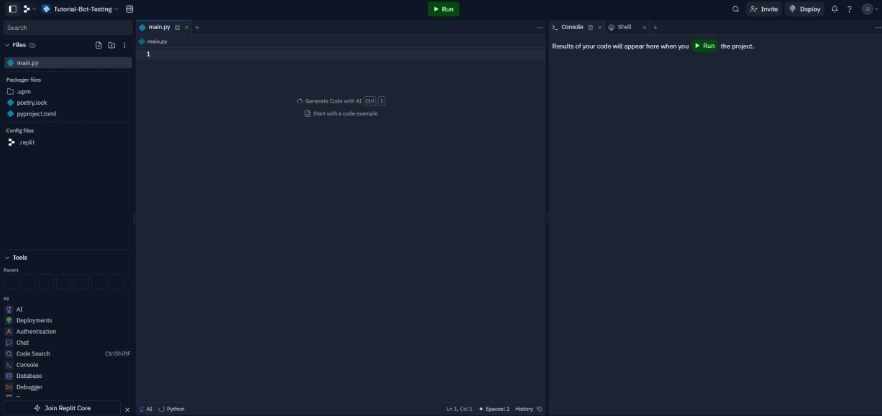If you’ve had any sort of experience with coding before, this may look self-explanatory to you. However for anyone else, I’ll just do a quick run-through by labelling everything in the above image:
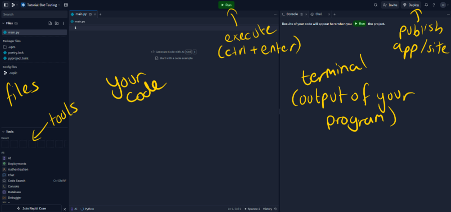We’ve given an overview of the tools needed for us to build our bot, well except Python, but there’s plenty of tutorials out there to learn about it. Now, we can get into the process of how we can program our bot!
Before we start, ensure that you have the developer portal open in a new tab before continuing, as you will need it to get your bot’s token, and handle a certain error we’ll run into later.
Now, let’s get to some actual code. First, we need to import some Python packages, but before we do, let me quickly go over what modules and packages are.
Modules are Python files that contain code (functions, classes, etc.) and you can use the functions and classes from other modules by typing “import [module/file name]” in your Python script.
Packages, however, are directories used to store modules. These are usually used as a way to reuse old code, saving time in writing a function and/or class over and over again.
Now that that’s out the way, let’s move onto the code!
import discord
from discord.ext import commands
This imports the discord package, then imports the ‘commands’ module from one of the packages.
intents = discord.Intents.default()
intents.members = True
intents.message_content = True
This defines the intents of your discord bot. In Discord.PY, intents are a way to indicate what events your bot can respond to.
In our case, the line about members allows your bot to respond to events related to members; for example, members leaving and joining a server. The line about messagecontent refers to events relating to the user’s messages, such as the on-message command, which we’ll talk about later.
bot = commands.Bot(command_prefix='!', intents=intents)
In short, this line basically defines our bot. It sets the command prefix, which is the character at the start of your commands, and the intents defined previously.
You may be wondering, wouldn’t this be where you enter your bot’s token, to connect it to your program? And the short answer to that question is no. We put the bot token at the end of the program after all the event functions have been defined, in a function called ‘run’. You’ll see it later.
@bot.event
async def on_ready():
print("Bot is ready to be used!")
try:
synced = await bot.tree.sync()
print(f"Synced {len(synced)} commands")
except Exception as e:
print(f"Error while syncing commands: {len(synced)}")
This function is run when the bot is ready to be used, hence the text in the print statement. The try-except statement is there when you’re dealing with slash commands. If you don’t want your bot to use slash commands, you don’t need the try-except code.
You may notice the decorator ‘@bot.event’ and the keyword ‘async’. In the context of what we’re creating, the keyword ‘async’ is used to define what’s called an asynchronous function, which can be paused to allow other functions run during execution.
The decorator is put onto various functions, such as on-ready, so that the function executes
when a certain event occurs.
@bot.command()
async def ping(ctx):
await ctx.send("Pong!")
This is how a regular command is created, and it’s much simpler than a slash command. Most of the time, developers only use these sorts of commands when they’re developing and testing a new command.
This won’t be added in our bot’s code, but I added it here so that you know how to create it!
@bot.tree.command( name="ping", description="a simple ping pong command." )
async def ping(interaction: discord.Interaction):
await interaction.response.send_message("Pong!")
This is the way to define a simple slash command. This command is called “ping”, and when a user uses it, the bot replies “Pong!”
These are the main types of Discord commands that users use when interacting with the bot.
Just so you’re not confused, the command name that the user will use on Discord, is the name parameter in the decorator (i.e. the user will type ‘/ping’). You may also notice the description parameter in the decorator. A lot of the time, people will give a description for all of their slash commands, so it’s easier for people to use them.
bot.run("YOUR BOT TOKEN HERE")
Finally, this is the run command that executes your discord bot. It’s also where you add your bot’s token from the developer portal. Be sure to refer to the section “An Overview on Bot Tokens” to get your bot token!
Putting all the code together (except for the @bot.command code snippet) into Replit, you’ll see the following:
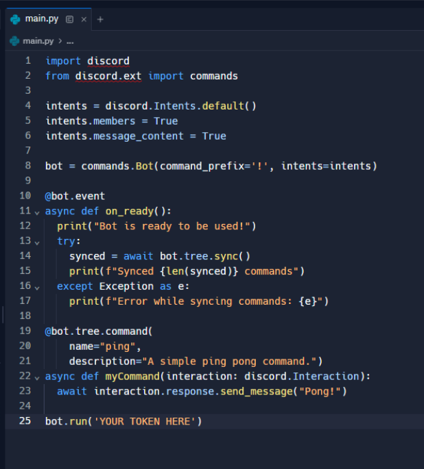You may notice that the package “discord” is underlined in red, meaning that the package isn’t installed.
Yet.
Two more things before we test out our bot.
The first things is how we can use the secrets tool.
Scroll down the “Tools” list until you find “Secrets”. We can use this to store our bot token.
Once you click the secrets tool, it appears as a tab next to our terminal. If you type as I did here, head back to the dev portal, copy your token, place it in the “value” textbox and press “Add Secret”, it should give you two lines of code.
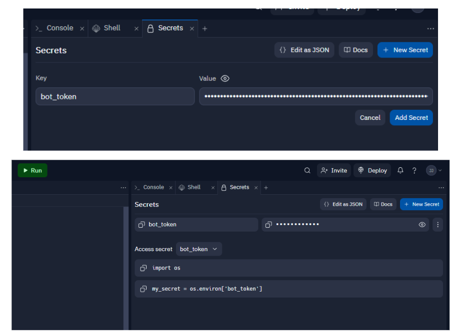Add the first line to where your imports are, and the second line just before the bot run command:
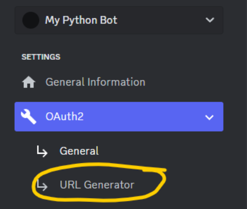The second thing is to now invite the bot to a Discord server. To do this, we need to generate a URL. This is used to invite your bot to other servers, so if you wanted to create an “invite” (slash) command, you’ll need this URL. Once on the URL generator page, tick the boxes as I did in the following image:
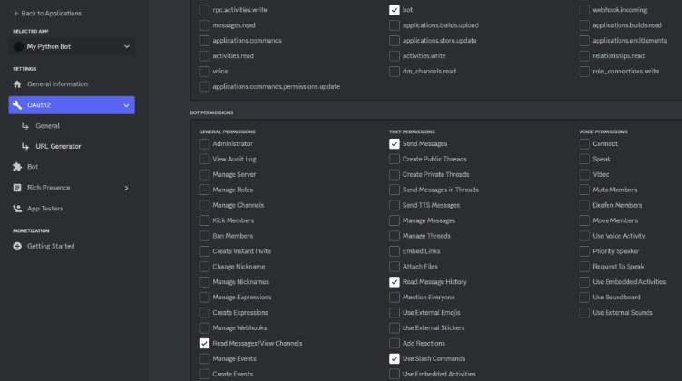Scrolling to the bottom of the page, you’ll get the invite URL.
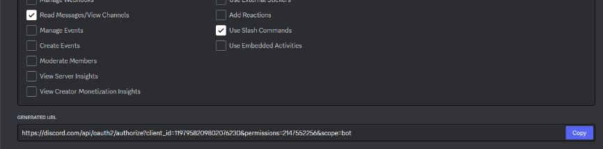Open this link in a new tab, go through the verification and the bot should be added to your Discord server. Go ahead and open up Discord to check your bot is in your chosen server.
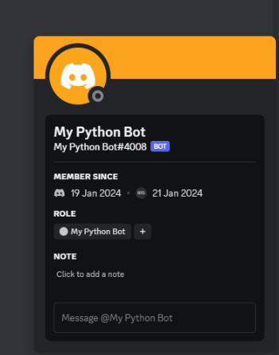Now that your bot has entered your testing server, we can now actually run our code and see if things will go smoothly.
We’ve got the code for our bot, and we’ve added the bot to a Discord server! Now, we can go ahead and run it, see if we get any errors, or if the bot runs smoothly.
We can click the green “execute” button right at the top, or press Control + Enter to run the code. Let’s check the terminal for our output:
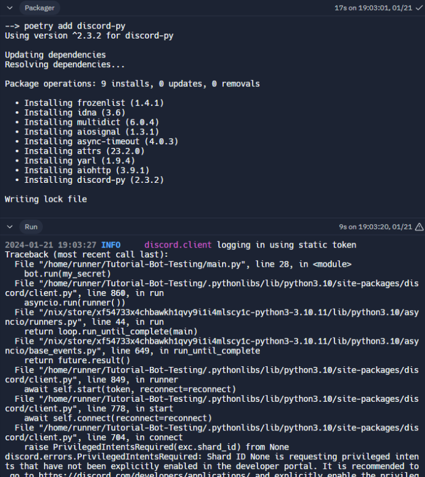So, good news: the program noticed that we didn’t have the correct packages installed, so it installed them for us.
Bad news: We got an error, and a fairly long one too. When we get errors in Python, almost all the time we only need to look at the end of the error:

Hmmm, it looks like we haven’t set something up in the discord developer portal. Let’s go back to the portal and check what we need to do.
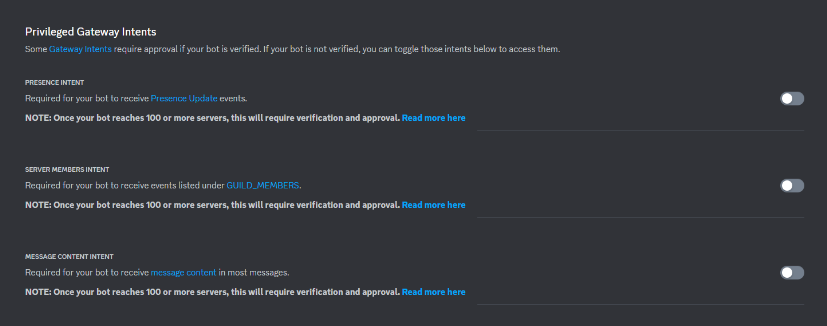Reading the error closely, we can see that the issue is to do with not switching the above switches on. Easily fixable.
After switching on all 3 intents switches, let’s go back to Replit, and try to run our bot again.
Here’s the new output:
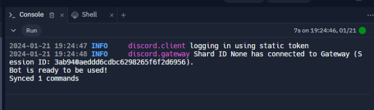Looks like things are running smoothly! We better check Discord.
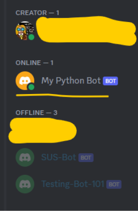Our bot is online, great! Now, we can test the ping-pong command:
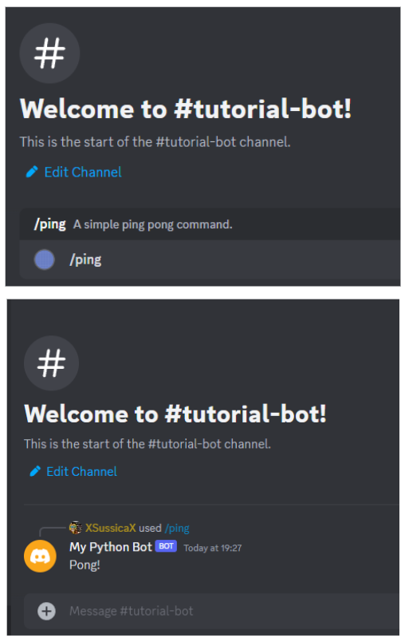It worked! We just created our first Discord bot, and ran a slash command with it!
So, we covered a lot in this article, so let’s do a quick summary.
The next steps to enhance your bot is to check out various Python tutorials, as well as further readings on Discord bots. You can program your Discord bot to do almost anything you want.
Thank you very much for reading this paper, and I hope whoever has read this, found it useful.